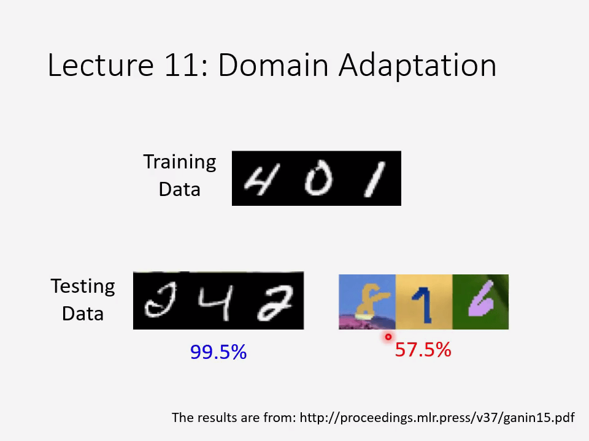
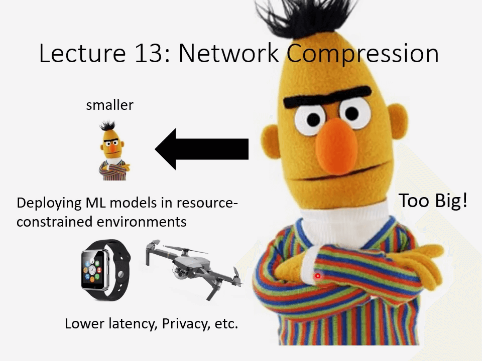
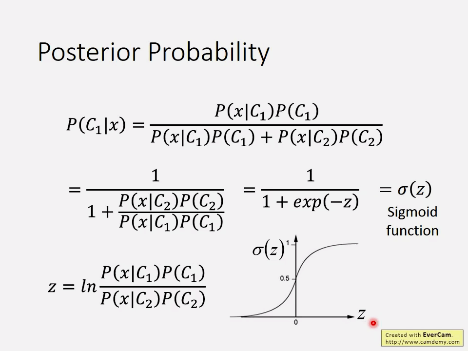

Preparation
【機器學習 2021】預測本頻道觀看人數 -上- - 機器學習基本概念簡介
什么是机器学习
Machine Learning ≈ Look for Function 让机器具备找函数的能力
Speech Recognition 语音辨识
Image Recognition 图像识别
Playing Go 下围棋
机器学习的各个领域
Regression 回归，如接受今日 PM 2.5，气温和臭氧含量作为参数，以明日 PM2.5 作为输出
The function outputs a scalar. 该函数输出一个标量。
Classification 分类，如判断收到的邮件是否为垃圾邮件。
Given options (classes), the function outputsthe correct one. 给出选项（类），该函数输出正确的选项。
如下围棋就是一个分类问题，将围棋的每个坐标当作一个类来看。
回归 和分类 只是机器学习中的一小部分，还有结构化学习 Structured Learning ，输入和输出都是具有结构化的对象（数列、列表、树、边界框等）。
举例：预测本频道观看人数
找到一个函数用于描述某天本频道观看人数。
1.Function with Unknown Parameters
我们假设某天本频道观看人数 y y y x 1 x_1 x 1 y = b + w x 1 y = b + wx_1 y = b + w x 1
参数 w w w b b b
2.Define Loss from Training Data
损失函数 L ( b , w ) L(b, w) L ( b , w ) w w w b b b w w w b b b
L o s s : L = 1 N ∑ n e n Loss: L = \frac{1}{N}\sum_ne_n
L o s s : L = N 1 n ∑ e n
y y y 预测值 ，y ^ \hat y y ^ 实际值 ，e e e 误差
如果 e = ∣ y − y ^ ∣ e=|y-\hat y| e = ∣ y − y ^ ∣ L L L 平均绝对值误差（MAE）
如果 e = ( y − y ^ ) 2 e=(y-\hat y)^2 e = ( y − y ^ ) 2 L L L 均方误差（MSE）
如果 y y y y ^ \hat y y ^ 交叉熵损失函数（Cross-entropy）
3.Optimization
w ∗ , b ∗ = a r g min w , b L w^*,b^*=arg\min_{w, b}L
w ∗ , b ∗ = a r g w , b min L
找到使 L L L w w w b b b
先考虑只有参数 w w w
w ∗ = a r g min w L w^*=arg\min_w L
w ∗ = a r g w min L
使用梯度下降 方法：
-（随机）挑选一个初始值 w 0 w^0 w 0
计算 L L L w w w ∂ L ∂ w ∣ w = w 0 \frac{\partial L}{\partial w}|_{w=w^0} ∂ w ∂ L ∣ w = w 0
迭代更新 w w w w 1 ← w 0 − η ∂ L ∂ w ∣ w = w 0 w^1\leftarrow w^0 - {\color{Red} \eta } \frac{\partial L}{\partial w}|_{w=w^0} w 1 ← w 0 − η ∂ w ∂ L ∣ w = w 0
其中 η {\color{Red} \eta } η 学习率（learning rate） ，这是由用户自行设定的。
由用户自行设定的参数被称为超参数（hypermeters）
梯度下降方法只能找到 L L L 极小值（local minima）而不是 最小值（global minima） ，但这不是梯度下降方法最大的问题。
为什么不采用暴力搜索的方法查找最小值？如果参数过多，暴力搜索的方法就无法实现了，只能采用梯度下降方法。
对于多个参数 w w w b b b
至于求导，可以由深度学习框架自行解决。
何时停止迭代？当算得的梯度为 0 或者人为终止迭代。
▽ L = [ ∂ L ∂ w ∂ L ∂ b ] g r a d i e n t \bigtriangledown L = \begin{bmatrix}
\frac{\partial L}{\partial w} \\
\frac{\partial L}{\partial b}
\end{bmatrix}_{\mathrm{gradient}} ▽ L = ⎣ ⎢ ⎡ ∂ w ∂ L ∂ b ∂ L ⎦ ⎥ ⎤ g r a d i e n t
因而得名梯度下降。
随着迭代次数增加，L L L
在这个示意图中，红色表示 L L L L L L
总结
最后的训练好的模型中 w ∗ = 0 . 9 7 w^*=0.97 w ∗ = 0 . 9 7 L ( w ∗ , b ∗ ) = 0 . 4 8 k L(w^*, b^*)=0.48k L ( w ∗ , b ∗ ) = 0 . 4 8 k
而对于训练时未用到的数据（2021 中各天本频道观看人数），L ′ = 0 . 5 8 k L'=0.58k L ′ = 0 . 5 8 k
训练好的模型只是简单地认为当日的本频道观看人数与前一日本频道观看人数有关，而从实际情况可以看出，本频道观看人数似乎有一定的周期性，如一周的周末中本频道观看人数较少。
调整模型，如 y = b + ∑ j = 1 7 w j x j y=b+\sum^7_{j=1}w_jx_j y = b + ∑ j = 1 7 w j x j L L L L ′ L' L ′
若 y = b + ∑ j = 1 2 8 w j x j y=b+\sum^{28}_{j=1}w_jx_j y = b + ∑ j = 1 2 8 w j x j L L L L ′ L' L ′
而当 y = b + ∑ j = 1 5 6 w j x j y=b+\sum^{56}_{j=1}w_jx_j y = b + ∑ j = 1 5 6 w j x j L L L L ′ L' L ′
【機器學習 2021】預測本頻道觀看人數 -下- - 深度學習基本概念簡介
1.Function with Unknown Parameters
也许**线性模型（Linear models）**太过简单，我们需要更复杂的模型。如图所示，如果真实模型像红色折线的那样，则你无论怎么训练线性模型，都无法很好地拟合真实情况。
Model Bias 一般是由于模型设计太过简单，此时再进行训练也无法找到更好的参数来使 L L L
我们可以将这个红色折线由一个常数和若干个 Hard Sigmoid 函数之和来表示：y = b + ∑ i c i s i g m o i d ( b i + w i x 1 ) y=b+\sum_ic_i\mathrm{sigmoid}(b_i+w_ix_1) y = b + ∑ i c i s i g m o i d ( b i + w i x 1 )
任何折线都可以用这种形式来表示，只要 Hard Sigmoid 函数管够就行。
Sigmoid 函数的个数？由用户自行设定，这也是一个 hypermeters。
用片状线性曲线近似连续曲线。为了有好的近似，我们需要足够的片断。
一般用 Soft Sigmoid 函数（往往称为 Sigmoid 函数）去逼近这个 Hard Sigmoid 函数。
Sigmoid 函数 ：y = c 1 1 + e − ( b + w x 1 ) = c s i g m o i d ( b + w x 1 ) y=c\frac{1}{1+e^{-(b+wx_1)}}=c\mathrm{sigmoid}(b+wx_1) y = c 1 + e − ( b + w x 1 ) 1 = c s i g m o i d ( b + w x 1 )
这样我们就得到了一个具有更多特征的新的回归模型：y = b + ∑ i c i s i g m o i d ( b i + ∑ j w i j x j ) y=b+\sum_ic_i\mathrm{sigmoid}\left(b_i+\sum_jw_ijx_j\right) y = b + ∑ i c i s i g m o i d ( b i + ∑ j w i j x j )
i i i j j j w i j w_{ij} w i j i i i x j x_j x j
再通过激活函数和相加后得到最后的回归模型 y y y
这个表达式可以用向量乘法简单表示。
将所有参数拉长变成一个向量 θ \theta θ
2.Define Loss from Training Data
损失函数 L L L L ( θ ) L(\theta) L ( θ )
3.Optimization
现在问题变为 θ ∗ = a r g min θ L \mathbf{\theta}^*=arg\min_\theta L θ ∗ = a r g min θ L
用 g \mathbf{g} g
由于参数量过多，要把数据集分成多个 batch 来更新参数 θ ∗ \mathbf{\theta}^* θ ∗ epoch 。
举例：
如果有 10000 个数据，Batch 的大小为 10，则一次 epoch 需要更新 1000 次参数。
如果有 1000 个数据，Batch 的大小为 100，则一次 epoch 需要更新 10 次参数。
Batch 的大小也是一个 hypermeters。
也可以用两个 ReLU 叠加起来来代替 Sigmoid 函数来逼近 Hard Sigmoid 函数。
我们把这种函数称之为激活函数 ，一般来说 ReLU 会比 Sigmoid 效果更好些。
我们用多个 ReLU 来逼近最终的回归曲线，可以看到随着 ReLU 的个数增多，L L L
我们也可以进行多次这种计算，形成深度神经网络 。
3 层神经网络的预测结果，由于模型中并没有考虑春节的因素，在春节前后误差较大。
给所接触到的东西作一个统一的命名。
随着时代的发展，神经网络的层数越来越多，准确率越来越好。
Residual Net 并不是简单的 Fully Connected Network，使用了 Special structure，不然很可能会过拟合。
神经网络的层数并不是越多越好，过多的层数可能会出现过拟合的现象。
Class Material
【機器學習 2022】開學囉- 又要週更了-
机器学习课程速览
This course focuses on Deep Learning .
在机器学习中，输入的数据可以是向量 、矩阵 （如图像）、序列 （如语音，文本），输出的数据可以是标量 （回归）、类别 （分类）、文本、图像等。
教机器的种种方法
HW1：COVID-19 Case Prediction 新冠感染人数预测
HW2：Phoneme Classification 因素分类
HW3：Image Classification 图像分类
HW4：Speaker Classification 说话者分类
HW5：Machine Translation 机器翻译
HW6：动漫脸谱生成
Lecture 1 - 5 有监督学习
课程 1-5 属于有监督学习，以给一张图片，让机器分类是宝可梦还是数码宝贝为例，训练集需要有对应的标签。
Lecture 7 自监督学习
要在深度神经网络中应用监督学习，我们需要足够的标记数据。但是人工手动标记数据既耗时又昂贵。对于一些特殊的领域，比如医学领域获取足够的数据本身就是一个挑战。因此，监督学习当前的主要瓶颈是标签生成和标注。
自监督学习 是通过以下方式将无监督问题 转化为有监督问题 的方法。
预训练模型 Pre-trained Model（基础模型 Foundation Model） 之于 下游模型 Downstream Tasks 相当于 操作系统 之于 应用。
AI 专家将大模型统一命名为 Foundation Models，可以翻译为基础模型或者是基石模型。
Lecture 6 GAN
GAN：是训练集的输入 x x x y y y
常见领域：
无监督的抽象性归纳
无监督翻译
无监督的自动语音识别
Lecture 12 强化学习
在人也不能确定最优解时——强化学习
进阶课题——不只是追求正确率
Lecture 8 异常检测
让机器在能识别这个图像是宝可梦还是神奇宝贝的同时，还能识别异常图片，返回”I don’t know“。
Lecture 9 Explainable AI
让机器知其然还要知其所以然。
举例，在机器判别图片是宝可梦还是神奇宝贝的过程中，将其判别的主要依据用特定的记号标记，然而判别的主要依据不在生物本身上？
最后发现原因：宝可梦的所有图片都是 PNG 格式，而大多数数码宝贝的图片是 JPEG 格式。机器根据背景颜色区分宝可梦和数码宝贝。
Lecture 10 Model Attack
往图片中一定的噪音，可能会出现截然不同的判别结果。
攻防问题
攻：通过加入某些噪音破坏判别结果
防：防止某些噪音破坏判别结果
Lecture 11 领域适应性

在黑白图像中训练好的模型，在黑白图像里测试准确率好，但在彩色图像中准确率差。
Lecture 神经网络压缩

在资源受限的环境中部署 ML 模型。
Lecture 14Life-long Learning
Life-long Learning 的目标，让机器能解决各种问题。
学习如何学习
Lecture 15 元学习
少量的学习通常是通过元学习实现的。让机器自己找到一个机器学习的算法。
ML 2022 PyTorch Tutorial 1
安装 pytorch
按照官方的方法是从官网 PyTorch 安装 pytorch 环境，但这在国内下载真的好慢……
鼓捣了老半天觉得用离线安装的方式比较好 orz
从镜像站 https://download.pytorch.org/whl/torch_stable.html 下载对应版本的torch和torchvision
下载了 cu117/torch-1.13.1%2Bcu117-cp39-cp39-win_amd64.whl 和 cu117/torchvision-0.14.1%2Bcu117-cp39-cp39-win_amd64.whl
在下载到的目录进入 cmd 使用pip install torch-l.13.1+cul17-cp39-cp39-win amd64.whl和pip install torchvision-0.14.1+cu117-cp39-cp39-win amd64.whl安装。
在 python 中验证：
1 2 3 4 import torchprint (torch.__version__)print (torch.cuda.is_available())
Training Neural Networks
训练神经网络的步骤：
定义神经网络结构，定义损失函数，定义优化算法
训练
Training & Testing Neural Networks
在训练模型中使用训练集 Training 和 验证集 Validation，测试模型时使用 Testing。
Training & Testing Neural Networks - in Pytorch
Step 1.torch.utils.data.Dataset & torch.utils.data.DataLoader
Dataset & Dataloader
DataSet: 存储数据样本 x x x y y y
Dataloader: 对数据进行分批分组 groups data in batches，实现多任务处理
1 2 dataset = MyData(file)True )
机器学习，深度学习模型训练阶段的 Shuffle 重要么？为什么？_技术宅 zch 的博客-CSDN 博客_深度学习 shuffle
对于 Training 和 Validation，需要打乱，shuffle=True
对于 Testing，不需要打乱，shuffle=False
如下列代码就将数据集分成 5 给 batch：
1 2 dataset = MyDataset(file)5 , shuffle=False )
设计一个 MyDataset 类用于管理数据集：
1 2 3 4 5 6 7 8 9 10 11 12 13 14 15 16 17 from torch.utils.data import Dataset, DataLoaderclass MyDataset (Dataset ):def __init__ (self, file ):"""读取数据并初始化""" self .data = ...def __getitem__ (self, index ):"""返回一个数据""" return self .data[index]def __len__ (self ):"""返回数据集的大小""" return len (self .data)
Tensors
pytorch 中的 Tensors 就是高维数组，相当于 numpy 中的 array
dim in PyTorch == axis in NumPy
创建 tensor
直接填入数据，list 或 numpy.ndarray
1 x = torch.tensor([[1 , -1 ], [-1 , 1 ]])
1 x = torch.from_numpy(np.array([[1 , -1 ], [-1 , 1 ]]))
1 x = torch.ones([1 , 2 , 5 ])
常见运算符
PyTorch v.s. Numpy
数据类型：
Data type
dtype
tensor
32-bit floating point
torch.float
torch.FloatTensor
64-bit integer (signed)
torch.long
torch.LongTensor
PyTorch
Numpy
x.shape
x.shape
x.dtype
x.dtype
x.reshape / x.view
x.reshape
x.squeeze()
x.squeeze()
x.unsqueeze(1)
np.expand_dims(x, 1)
Device
自行选择 CPU 或 Cuda 对 Tensors 进行运算。
CPU
GPU
计算梯度
定义 x x x requires_grad=True。
x = [ 1 0 − 1 1 ] x=\begin{bmatrix}1 & 0 \\ -1 & 1\end{bmatrix}
x = [ 1 − 1 0 1 ]
1 x = torch.tensor([[1. , 0. ], [-1. , 1. ]], requires_grad=True )
z = ∑ i ∑ j x i , j 2 z=\sum_i\sum_j x^2_{i,j}
z = i ∑ j ∑ x i , j 2
求导
∂ z ∂ x i , j = 2 x i , j \frac{\partial z}{\partial x_{i,j}}=2x_{i,j}
∂ x i , j ∂ z = 2 x i , j
得到 x x x
∂ z ∂ x = [ 2 0 − 2 2 ] \frac{\partial z}{\partial x}=\begin{bmatrix}2&0\\-2&2\end{bmatrix}
∂ x ∂ z = [ 2 − 2 0 2 ]
1 tensor([[ 2., 0.], [-2., 2.]])
Step 2.torch.nn.Module
1 layer = torch.nn.Linear(32 , 64 )
将定义的神经网络模型放在MyModel类中：
1 2 3 4 5 6 7 8 9 10 11 12 13 14 15 import torch.nn as nnclass MyModel (nn.Module):def __init__ (self ):"""初始化你的模型，定义神经网络层""" super (MyModel, self ).__init__()self .net = nn.Sequential(10 , 32 ),32 , 1 )def forward (self, x ):"""计算你的 NN 的输出""" return self .net(x)
可以不使用nn.Sequential，效果与下面的代码作用一致
1 2 3 4 5 6 7 8 9 10 11 12 13 14 15 import torch.nn as nnclass MyModel (nn.Module):def __init__ (self ):super (MyModel, self ).__init__()self .layer1 = nn.Linear(10 , 32 )self .layer2 = nn.Sigmoid(),self .layer3 = nn.Linear(32 ,1 )def forward (self, x ):self .layer1(x)self .layer2(out)self .layer3(out)return out
Step 3.torch.nn.MSELoss torch.nn.CrossEntropyLoss etc.
定义损失函数
1 criterion = nn.MSELoss()
1 criterion = nn.CrossEntropyLoss()
1 loss = criterion(model_output, expected_value)
Step 4.torch.optim
找到一个函数以减少 loss 的值，如 随机梯度下降法 Stochastic Gradient Descent (SGD)
1 torch.optim.SGD(model.parameters(), lr, momentum = 0 )
Step 5.Entire Procedure
Neural Network Training Setup
完整流程：读取数据-分割数据-定义模型-定义损失函数-定义优化函数
1 2 3 4 5 dataset = MyDataset(file)16 , shuffle=True )0.1 )
Neural Network Training Loop
训练过程：
1 2 3 4 5 6 7 8 9 for epoch in range (n_epochs): for x, y in tr_set:
Neural Network Validation Loop
上接上面的 epoch 循环：
1 2 3 4 5 6 7 8 9 model.eval () 0 for x, y in dv_set: with torch.no_grad(): len (x) len (dv_set.dataset)
Neural Network Testing Loop
1 2 3 4 5 6 7 model.eval () for x in tt_set: with torch.no_grad():
Notice - model.eval(), torch.no_grad()
model.eval() 改变一些模型层的行为，如 dropout 和 batch normalization。with torch.no_grad()防止计算结果被添加到梯度计算的图。通常用于防止在验证/测试数据上的意外训练。
存/读 训练模型
1 torch.save(model.state_dict(), path)
1 2 ckpt = torch.load(path)
More About PyTorch
torchaudio
torchtext
natural language processing
torchvision
skorch
Useful github repositories using PyTorch
Huggingface Transformers (transformer models: BERT, GPT, …)
Fairseq (sequence modeling for NLP & speech)
ESPnet (speech recognition, translation, synthesis, …)
Most implementations of recent deep learning papers
Introduction of Deep Learning
Deep Learning 使用次数越来越频繁。
Deep Learning 的历史：
1958: Perceptron (linear model) 线性感知机
1969: Perceptron has limitation 线性感知机有明显的局限性，如不能处理异或问题
1980s: Multi-layer perceptron 多层感知机
Do not have significant difference from DNN today 与当今深度神经网络并无明显差别
1986: Backpropagation 反向传播
Usually more than 3hidden layers is not helpful 多余 3 层的隐藏层并没有明显效果
1989: 1hidden layer is “good enough”, why deep? 1 层隐藏层即可，为什么要多层？
2006: RBM initialization (breakthrough) 受限玻尔兹曼机（RBM）学习 - 知乎 (zhihu.com)
2009: GPU 显卡加速神经网络的训练速度
2011: Start to be popular in speech recognition 在语音识别中效果显著
2012: win ILSVRC image competition 赢得 ILSVRS 图像识别比赛
Deep Learning 的步骤与传统机器学习方法类似：
Step 1:define a setof function 在 Deep Learning 中为设置神经网络的结构
Step 2:goodness offunction
Step 3: pickthe bestfunction
在神经网络前向传播的过程中其实就是一系列矩阵运算，因此使用 GPU 速度比 CPU 要更快。
神经网络的隐藏层就相当于传统机器学习方法中 Feature extractor replacingfeature engineering 的过程。
如果是一个分类问题，在输出层要进行 Softmax 操作，输出期望值最高的类别。
对于手写体数字识别，输出的是一个向量，值最高的就是输出的类别。
此时神经网络中的隐藏层就是一个手写体数字识别函数集。你设定一个好的神经网络结构，以拟合出一个好的函数。
Q: 设置神经网络需要多少层？每层需要多少神经元？
A: 需要开发者的不断试错和直觉。
Q: 我们可以让机器来自动设计神经网络吗？
A: 如 [Evolutionary Artificial Neural Networks (researchgate.net )](https://www.researchgate.net/publication/2861461_Evolutionary_Artificial_Neural_Networks#:~:text=Evolutionary artificial neural networks (EANNs) refer to a,(GAs)%2C evolutionary programming (EP)%2C or other evolutionary algorithms.)，但是没有那么通用
Q: 其他形状的神经网络结构？
A: 如卷积神经网络
定义损失函数，由于 y y y y ^ \hat y y ^ 交叉熵损失函数（Cross-entropy）
C ( y , y ^ ) = − ∑ i = 1 1 0 y i ^ ln y i C(y,\hat y)=-\sum^{10}_{i=1}\hat{y_i}\ln y_i
C ( y , y ^ ) = − i = 1 ∑ 1 0 y i ^ ln y i
最终的损失函数表示为 L = ∑ n = 1 N C n L=\sum^N_{n=1}C^n L = ∑ n = 1 N C n L L L
搜索 L L L
就连 Alpha Go 也使用梯度下降。
反向传播：计算各种微分的有效方式。人工计算微分总是很麻烦，往往使用现成的库。
理论：只要神经元个数够多，总能拟合出任意函数。
其他资源：
My Course: Machine learning and having it deep andstructured
“Neural Networks and Deep Learning”
“Deep Learning”
Backpropagation
backpropagation 反向传播算法 是在梯度下降算法中计算梯度一种有效率的算法。
链式法则
Case 1 y = g ( x ) z = h ( y ) y=g(x)\ z=h(y) y = g ( x ) z = h ( y )
Δ x → Δ y → Δ z \Delta x \rightarrow \Delta y \rightarrow \Delta z Δ x → Δ y → Δ z 要求 z z z x x x d z d x = d z d y d y d x \frac{dz}{dx}=\frac{dz}{dy}\frac{dy}{dx} d x d z = d y d z d x d y
Case 2 x = g ( s ) y = h ( s ) z = k ( x , y ) x=g(s)\ y=h(s)\ z=k(x,y) x = g ( s ) y = h ( s ) z = k ( x , y )
要求 z z z s s s d z d s = ∂ z ∂ x d x d s + ∂ z ∂ y d y d s \frac{dz}{ds}=\frac{\partial z}{\partial x}\frac{dx}{ds}+\frac{\partial z}{\partial y}\frac{dy}{ds} d s d z = ∂ x ∂ z d s d x + ∂ y ∂ z d s d y
对于梯度下降方法，需要求 L L L w w w
L ( θ ) = ∑ n = 1 N C n ( θ ) → ∂ L ( θ ) ∂ w = ∑ n = 1 N ∂ C n ( θ ) ∂ w L(\theta)=\sum^N_{n=1}C^n(\theta)\rightarrow \frac{\partial L(\theta)}{\partial w}=\sum^N_{n=1}\frac{\partial C^n(\theta)}{\partial w}
L ( θ ) = n = 1 ∑ N C n ( θ ) → ∂ w ∂ L ( θ ) = n = 1 ∑ N ∂ w ∂ C n ( θ )
要求 ∂ L ( θ ) ∂ w \frac{\partial L(\theta)}{\partial w} ∂ w ∂ L ( θ ) ∂ C ∂ w \frac{\partial C}{\partial w} ∂ w ∂ C
根据链式法则，∂ C ∂ w = ∂ z ∂ w ∂ C ∂ z \frac{\partial C}{\partial w}=\frac{\partial z}{\partial w}\frac{\partial C}{\partial z} ∂ w ∂ C = ∂ w ∂ z ∂ z ∂ C
对于 Forward pass ，用于计算 ∂ z ∂ w \frac{\partial z}{\partial w} ∂ w ∂ z
对于 Backward pass ，用于计算 ∂ C ∂ z \frac{\partial C}{\partial z} ∂ z ∂ C z z z
对于 Forward pass，如示意图，z = x 1 w 1 + x 2 w 2 + b z=x_1w_1+x_2w_2+b z = x 1 w 1 + x 2 w 2 + b ∂ z ∂ w 1 = x 1 \frac{\partial z}{\partial w_1}=x_1 ∂ w 1 ∂ z = x 1 ∂ z ∂ w 2 = x 2 \frac{\partial z}{\partial w_2}=x_2 ∂ w 2 ∂ z = x 2 w w w
而对于 Backward pass，用于计算 ∂ C ∂ z \frac{\partial C}{\partial z} ∂ z ∂ C ∂ C ∂ z = ∂ a ∂ z ∂ C ∂ a = ∂ z ′ ∂ a ∂ C ∂ z ′ + ∂ z ′ ′ ∂ a ∂ C ∂ z ′ ′ \frac{\partial C}{\partial z}=\frac{\partial a}{\partial z}\frac{\partial C}{\partial a}=\frac{\partial z'}{\partial a}\frac{\partial C}{\partial z'}+\frac{\partial z''}{\partial a}\frac{\partial C}{\partial z''} ∂ z ∂ C = ∂ z ∂ a ∂ a ∂ C = ∂ a ∂ z ′ ∂ z ′ ∂ C + ∂ a ∂ z ′ ′ ∂ z ′ ′ ∂ C
z z z a a a w w w C C C z z z
此时就要通过神经元后面的数据来计算 ∂ C ∂ z = σ ′ ( z ) [ w 3 ∂ C ∂ z ′ + w 4 ∂ C ∂ z ′ ′ ] \frac{\partial C}{\partial z}=\sigma'(z)\left[w_3\frac{\partial C}{\partial z'}+w_4\frac{\partial C}{\partial z''}\right] ∂ z ∂ C = σ ′ ( z ) [ w 3 ∂ z ′ ∂ C + w 4 ∂ z ′ ′ ∂ C ]
其中 σ ′ ( z ) \sigma'(z) σ ′ ( z ) z z z
对于 Sigmoid 函数 f ( x ) = 1 1 + e − x f(x)=\frac{1}{1+e^{-x}} f ( x ) = 1 + e − x 1 f ′ ( x ) = f ( x ) [ 1 − f ( x ) ] f'(x)=f(x)\left[1-f(x)\right] f ′ ( x ) = f ( x ) [ 1 − f ( x ) ]
如果当前层的下一层是输出层，则可以根据输出的值计算 ∂ C ∂ z ′ \frac{\partial C}{\partial z'} ∂ z ′ ∂ C
如果不是，则要递归地计算下一层的 ∂ C ∂ z \frac{\partial C}{\partial z} ∂ z ∂ C
最后总结，通过 Forward Pass 计算得到 ∂ z ∂ w = a \frac{\partial z}{\partial w}=a ∂ w ∂ z = a ∂ C ∂ z \frac{\partial C}{\partial z} ∂ z ∂ C ∂ C ∂ w \frac{\partial C}{\partial w} ∂ w ∂ C
Predicting Pokémon CP
这是一个回归问题的案例分析。
回归 Regression 可以
课程的案例分析是：
已知宝可梦的战力值 x c p x_{cp} x c p x s x_s x s x h p x_{hp} x h p x w x_w x w x h x_h x h y y y
Step 1: Model
先假定一个线性模型，进化后的战力值只与当前战力值相关，y = b + w x c p y=b+wx_{cp} y = b + w x c p
Step 2: Goodness of Function
训练集是 10 个宝可梦的数据，记作 ( x 1 , y ^ 1 ) , ( x 2 , y ^ 2 ) . . . ( x 1 0 , y ^ 1 0 ) (x^1,\hat y^1), (x^2, \hat y^2)...(x^10, \hat y^{10}) ( x 1 , y ^ 1 ) , ( x 2 , y ^ 2 ) . . . ( x 1 0 , y ^ 1 0 )
设计损失函数估算误差 Estimation error：L ( f ) = L ( w , b ) = ∑ n = 1 1 0 ( y ^ n − ( b + w ⋅ x c p n ) ) \mathrm{L}(f)=\mathrm{L}(w, b)=\sum^{10}_{n=1}\left(\hat y^n - (b+w\cdot x^n_{cp})\right) L ( f ) = L ( w , b ) = ∑ n = 1 1 0 ( y ^ n − ( b + w ⋅ x c p n ) )
Step 3: Gradient Descent
使用梯度下降 方法以解决 w ∗ = a r g min w L ( w ) w^*=arg\min_wL(w) w ∗ = a r g min w L ( w )
梯度下降只能找到极小值而不能保证找到最小值，在初始参数不同的时候可能会得到不同的结果。
但在线性模型中，这个问题不存在，因为此时极小值就是最小值。
此时得到的训练模型 b = − 1 8 8 . 4 , w = 2 . 7 b=-188.4, w=2.7 b = − 1 8 8 . 4 , w = 2 . 7 L = 3 5 . 0 L=35.0 L = 3 5 . 0 L = 3 1 . 9 L=31.9 L = 3 1 . 9
考虑将模型换为更复杂的模型，此时 L L L
Model Selection
选择的模型次数越高，模型在训练集上的 L L L L L L 过拟合 。
就好比你在驾校练车，练着练着发现了查看某些标记点开车效果更好，但在真实道路上并不能表现得更好。
考虑其他因素对 y y y
引入独热编码，此时模型变为 y = b + ∑ w i x i y=b+\sum w_ix_i y = b + ∑ w i x i
此法再次有效地降低了 L L L
当模型过于复杂时，还是会出现过拟合的问题。
尝试修改 L L L L = ∑ n ( y ^ n − ( b + ∑ w i x i ) ) 2 + λ ∑ ( w i ) 2 L=\sum_n\left(\hat y^n-\left(b+\sum w_ix_i\right)\right)^2+{\color{Red}\lambda \sum(w_i)^2} L = ∑ n ( y ^ n − ( b + ∑ w i x i ) ) 2 + λ ∑ ( w i ) 2
λ \lambda λ
Pokemon classification
Classification: Probabilistic Generative Model 分类：概率生成模型
分类问题：接受输入 x x x n n n
实例：
Credit Scoring 信用评分
Input: income, savings, profession, age, past financial history…
Output: accept or refuse 借不借你钱
Medical Diagnosis 医疗诊断
Input: current symptoms, age, gender, past medical history …
Output: which kind of diseases 你得了啥病
Handwritten character recognition 手写体识别
课程案例：根据宝可梦的种族值（血量、攻击、防御、特攻、特防、速度）预测这只宝可梦的属性。
如果强行把分类问题看作是一个回归问题：训练时把类别 1 当作输入为 1，把类别 2 当作输出为 -1
测试时输出越接近 1，越认为是类别 1；输出越接近 -1，越认为是类别 2。
回归会将由于一些“太正确”的点而改变回归直线使得分类不正确。如果要分的类别更多则效果更差。
理想的替代：
函数模型
x x x f ( x ) f(x) f ( x ) g ( x ) > 0 g(x)>0 g ( x ) > 0
损失函数
L ( f ) = ∑ n δ ( f ( x n ) ≠ y ^ n ) L(f)=\sum_n\delta(f(x^n)\ne \hat y^n) L ( f ) = ∑ n δ ( f ( x n ) ≠ y ^ n )
找到一个方法使得 L L L
使用概率模型：
P ( x ) = P ( x ∣ C 1 ) P ( C 1 ) + P ( x ∣ C 2 ) P ( C 2 ) P(x)=P(x|C_1)P(C_1)+P(x|C_2)P(C_2)
P ( x ) = P ( x ∣ C 1 ) P ( C 1 ) + P ( x ∣ C 2 ) P ( C 2 )
我们把序号 < 4 0 0 < 400 < 4 0 0
序号 < 4 0 0 < 400 < 4 0 0 7 9 79 7 9 6 1 61 6 1 P ( C 1 ) = 7 9 / ( 7 9 + 6 1 ) = 0 . 5 6 , P ( C 2 ) = 6 1 / ( 7 9 + 6 1 ) = 0 . 4 4 P(C_1)=79/(79+61)=0.56, P(C_2)=61/(79+61)=0.44 P ( C 1 ) = 7 9 / ( 7 9 + 6 1 ) = 0 . 5 6 , P ( C 2 ) = 6 1 / ( 7 9 + 6 1 ) = 0 . 4 4
我们先假设宝可梦的种族只与宝可梦的防御和特防有关。
如可达鸭的防御为 48，特防为 50，则它的特征向量为 [ 4 8 5 0 ] \begin{bmatrix} 48 \\ 50 \end{bmatrix} [ 4 8 5 0 ]
我们假设水系宝可梦的防御和特防服从正态分布。
正态分布函数：
f μ , Σ ( x ) = 1 ( 2 π ) D / 2 1 ∣ Σ ∣ 1 / 2 exp { − 1 2 ( x − μ ) T Σ − 1 ( x − μ ) } f_{\mu,\Sigma}(x)=\frac{1}{(2\pi)^{D/2}}\frac{1}{|\Sigma|^{1/2}}\exp\{-\frac{1}{2}(x-\mu)^T\Sigma^{-1}(x-\mu)\}
f μ , Σ ( x ) = ( 2 π ) D / 2 1 ∣ Σ ∣ 1 / 2 1 exp { − 2 1 ( x − μ ) T Σ − 1 ( x − μ ) }
Input: vector x x x
output:
probability of sampling 采样概率 x x x
The shape of the function determines by mean 均值 μ \mu μ covariance matrix 协方差矩阵 Σ \Sigma Σ
假设这些点是从高斯分布中取样的。
找到它们背后的高斯分布。
最大似然估计法
具有任何均值 μ \mu μ Σ \Sigma Σ
当给定样本 x 1 , x 2 , x 3 , . . . , x 7 9 x^1,x^2,x^3,...,x^{79} x 1 , x 2 , x 3 , . . . , x 7 9 μ \mu μ Σ \Sigma Σ
评估函数：
L ( μ , Σ ) = f μ , Σ ( x 1 ) f μ , Σ ( x 2 ) f μ , Σ ( x 3 ) . . . f μ , Σ ( x 7 9 ) L(\mu,\Sigma)=f_{\mu,\Sigma}(x^1)f_{\mu,\Sigma}(x^2)f_{\mu,\Sigma}(x^3)...f_{\mu,\Sigma}(x^{79})
L ( μ , Σ ) = f μ , Σ ( x 1 ) f μ , Σ ( x 2 ) f μ , Σ ( x 3 ) . . . f μ , Σ ( x 7 9 )
为了让 L L L μ \mu μ Σ \Sigma Σ
此时计算两个属性的宝可梦样本的 μ \mu μ Σ \Sigma Σ
在公式的参数都可求后，我们便可以进行分类。
当 P ( C 1 ∣ x ) > 0 . 5 P(C_1|x)>0.5 P ( C 1 ∣ x ) > 0 . 5 x x x
然而这效果并不好…即使把所有因素都考虑进去，也只有 54% 的准确率。
开始调整模型，假设两个分类的协方差矩阵相同。
此时两种属性共用 Σ = 7 9 1 4 0 Σ 1 + 6 1 1 4 0 Σ 2 \Sigma = \frac{79}{140}\Sigma^1+\frac{61}{140}\Sigma^2 Σ = 1 4 0 7 9 Σ 1 + 1 4 0 6 1 Σ 2
此时分类边界又变成了直线，虽然与回归直线完全不同，但我们也把它称之为线性模型。
将所有因素考虑进来，准确率提升至 73%。
总结 3 个步骤：
如果你假定所有分布都是独立的，则说明你在使用朴素贝叶斯分类器 。
而对于二分类问题，你不要使用高斯分布，而是使用伯努利分布。

分析为什么边界是一条直线？
将 P ( C 1 ∣ x ) P(C_1|x) P ( C 1 ∣ x ) P ( C 1 ∣ x ) = σ ( z ) P(C_1|x)=\sigma(z) P ( C 1 ∣ x ) = σ ( z )
一阵推演，z z z
P ( C 1 ∣ x ) = σ ( w ⋅ x + b ) P(C_1|x)=\sigma(w\cdot x + b) P ( C 1 ∣ x ) = σ ( w ⋅ x + b ) Σ \Sigma Σ
我们可以直接找到 w w w b b b N 1 , N 2 , μ 1 , μ 2 , Σ N_1,N_2,\mu^1,\mu^2,\Sigma N 1 , N 2 , μ 1 , μ 2 , Σ
Logistic Regression
由上节课得到选取的函数模型 f w , b ( x ) = P w , b ( C 1 ∣ x ) f_{w,b}(x)=P_{w,b}(C_1|x) f w , b ( x ) = P w , b ( C 1 ∣ x )
f w , b ( x ) = σ ( z ) , z = ∑ i w i x i f_{w,b}(x)=\sigma(z),z=\sum_iw_ix_i
f w , b ( x ) = σ ( z ) , z = i ∑ w i x i
定义评估函数
L ( w , b ) = f w , b ( x 1 ) f w , b ( x 2 ) ( 1 − f w , b ( x 3 ) ) . . . f w , b ( x N ) L(w,b)=f_{w,b}(x^1)f_{w,b}(x^2)\left(1-f_{w,b}(x^3)\right)...f_{w,b}(x^N)
L ( w , b ) = f w , b ( x 1 ) f w , b ( x 2 ) ( 1 − f w , b ( x 3 ) ) . . . f w , b ( x N )
目标是选取 w ∗ , b ∗ w^*,b^* w ∗ , b ∗ L L L
将分类的类别用 y ^ n \hat y^n y ^ n
将问题由查找 a r g max w , b L ( w , b ) arg\max_{w,b}L(w,b) a r g max w , b L ( w , b ) a r g min w , b − ln L ( x , b ) arg\min_{w,b}-\ln L(x,b) a r g min w , b − ln L ( x , b )
最后得到由伯努利分布的交叉熵损失函数表示 − ln L ( w , b ) -\ln L(w,b) − ln L ( w , b )
为什么在 Logistics Regression 中，不像 Linear Regression 一样使用 square error？
查找一个最好的函数：求出 − ln L ( w , b ) -\ln L(w,b) − ln L ( w , b )
依旧使用梯度下降方法。
最后得到的方法与 Linear Regression 一样。
总结：
Step
Logistic Regression
Linear Regression
1 定义模型
f w , b ( x ) = σ ( ∑ i w i x i + b ) f_{w,b}(x)=\sigma\left(\sum_iw_ix_i+b\right) f w , b ( x ) = σ ( ∑ i w i x i + b ) [ 0 , 1 ] [0,1] [ 0 , 1 ] f w , b ( x ) − ∑ i w i x i + b f_{w,b}(x)-\sum_iw_ix_i+b f w , b ( x ) − ∑ i w i x i + b
2 衡量模型好坏
对于训练集：( x n , y ^ n ) (x^n,\hat y^n) ( x n , y ^ n ) y ^ n \hat y^n y ^ n L ( f ) = ∑ n C ( f ( x n ) , y ^ n ) L(f)=\sum_n C(f(x^n),\hat y^n) L ( f ) = ∑ n C ( f ( x n ) , y ^ n )
对于训练集：( x n , y ^ n ) (x^n,\hat y^n) ( x n , y ^ n ) y ^ n \hat y^n y ^ n L ( f ) = 1 2 ∑ n ( f ( x n ) − y ^ n ) 2 L(f)=\frac{1}{2}\sum_n (f(x^n)-\hat y^n)^2 L ( f ) = 2 1 ∑ n ( f ( x n ) − y ^ n ) 2
3 查找最佳模型
两者相同
两者相同
当 Logistic Regression 使用 Square Error 作为损失函数？
出现微分值为 0 的情况，导致参数无法迭代更新。
Cross Entropy 与 Square Error 的对比，Square Error 的梯度在 Logistics Regression 中太平缓，不利于训练。
对于 P ( C 1 ∣ x ) = σ ( w ⋅ x + b ) P(C_1|x)=\sigma(w\cdot x + b) P ( C 1 ∣ x ) = σ ( w ⋅ x + b )
Discriminative 判别模型直接查找 w w w b b b
Generative 概率模型需要计算样本的 μ 1 , μ 2 , Σ − 1 \mu^1,\mu^2,\Sigma^{-1} μ 1 , μ 2 , Σ − 1
两者选取的模型相同，但是最终得到的函数往往不同。
同样的模型，同样的训练数据，采用两种方法所得结果 ( w , b ) (w,b) ( w , b )
对于如图上的训练集，给出测试集 [ 1 1 ] \begin{bmatrix}1\\1\end{bmatrix} [ 1 1 ]
Benefit of generative model 概率模型的优点
With the assumption of probability distribution,less training data is needed
With the assumption of probability distributionmore robust to the noise
Priors and class-dependent probabilities can beestimated from different sources.
对于更多类别，使用 Softmax 操作得到概率分布。
Softmax 的公式得到了数学证明。
Logistic Regression 的局限性——难以解决异或问题。
因为你无法找到一个直线划分它们。
解决方法：特征转移。如将 x 1 ′ x1' x 1 ′ [ 0 0 ] \begin{bmatrix}0\\0\end{bmatrix} [ 0 0 ] x 2 ′ x2' x 2 ′ [ 1 1 ] \begin{bmatrix}1\\1\end{bmatrix} [ 1 1 ]
但是找到这种特征转移函数并不是件易事。
通过在分类感知器前面再加上一些神经元以便特征转移。
此时便找到了一个方法使用 Logistic Regression 解决异或问题。
我们把这种方法总结起来就是个神经网络，也可以叫它 Deep Learning。
HW1
Download data
从 https://www.kaggle.com/competitions/ml2022spring-hw1 获取数据集 covid.train.csv 和 covid.test.csv。
Import packages
1 2 3 4 5 6 7 8 9 10 11 12 13 14 15 import mathimport numpy as npimport pandas as pdimport osimport csvfrom tqdm import tqdmimport torchimport torch.nn as nnfrom torch.utils.data import Dataset, DataLoader, random_splitfrom torch.utils.tensorboard import SummaryWriter
Some Utility Functions
You do not need to modify this part.
1 2 3 4 5 6 7 8 9 10 11 12 13 14 15 16 17 18 19 20 21 22 23 24 25 26 27 28 29 30 31 32 33 34 35 36 def same_seed (seed ): """ Fixes random number generator seeds for reproducibility. 修正随机数种子以保证结果可重复性。 """ True False if torch.cuda.is_available():def train_valid_split (data_set, valid_ratio, seed ):""" Split provided training data into training set and validation set 将提供的训练数据分成训练集和验证集，返回 numpy.array 形式 """ int (valid_ratio * len (data_set)) len (data_set) - valid_set_sizereturn np.array(train_set), np.array(valid_set)def predict (test_loader, model, device ):eval () for x in tqdm(test_loader):with torch.no_grad(): 0 ).numpy() return preds
Dataset
1 2 3 4 5 6 7 8 9 10 11 12 13 14 15 16 17 18 19 20 21 22 23 24 25 class COVID19Dataset (Dataset ):""" x: 特征 y: 目标，如果为空，则做预测 """ def __init__ (self, x, y=None ):if y is None :self .y = yelse :self .y = torch.FloatTensor(y) self .x = torch.FloatTensor(x)def __getitem__ (self, idx ):""" 根据索引返回数据 """ if self .y is None :return self .x[idx]else :return self .x[idx], self .y[idx]def __len__ (self ):return len (self .x)
Neural Network Model
通过修改下面的类，尝试不同的模型架构。
1 2 3 4 5 6 7 8 9 10 11 12 13 14 15 16 17 18 class My_Model (nn.Module):def __init__ (self, input_dim ):super (My_Model, self ).__init__() self .layers = nn.Sequential(16 ),16 , 8 ), 8 , 1 ) def forward (self, x ):self .layers(x)1 ) return x
Feature Selection
通过修改下面的函数，选择你认为有用的特征。
1 2 3 4 5 6 7 8 9 10 11 12 13 14 15 def select_feat (train_data, valid_data, test_data, select_all=True ):""" 选择有用的特征来进行回归。 """ 1 ], valid_data[:, -1 ]1 ], valid_data[:, :-1 ], test_dataif select_all:list (range (raw_x_train.shape[1 ]))else :0 , 1 , 2 , 3 , 4 ] return raw_x_train[:, feat_idx], raw_x_valid[:, feat_idx], raw_x_test[:, feat_idx], \
Training Loop
1 2 3 4 5 6 7 8 9 10 11 12 13 14 15 16 17 18 19 20 21 22 23 24 25 26 27 28 29 30 31 32 33 34 35 36 37 38 39 40 41 42 43 44 45 46 47 48 49 50 51 52 53 54 55 56 57 58 59 60 61 62 63 64 65 66 def trainer (train_loader, valid_loader, model, config, device ):'mean' )'learning_rate' ], momentum=0.9 ) if not os.path.isdir('./models' ):'./models' ) 'n_epochs' ], math.inf, 0 , 0 for epoch in range (n_epochs):0 , leave=True )for x, y in train_pbar:1 f'Epoch [{epoch+1 } / {n_epochs} ]' )'loss' : loss.detach().item()})sum (loss_record) / len (loss_record)'Loss/train' , mean_train_loss, step)eval () for x, y in valid_loader:with torch.no_grad():sum (loss_record) / len (loss_record)print (f'Epoch [{epoch + 1 } / {n_epochs} ]: Train loss: {mean_train_loss: .4 f} ,\ Valid loss: {mean_valid_loss: .4 f} ' )'Loss/valid' , mean_valid_loss, step)if mean_valid_loss < best_loss:'save_path' ]) print ('Saving model with loss {:.3f}...' .format (best_loss))0 else :1 if early_stop_count >= config['early_stop' ]:print ('\nModel is not improving, so we halt the training session.' )return
Configurations
配置
config 包含了 超参数 和 模型保存路径。
1 2 3 4 5 6 7 8 9 10 11 device = 'cuda' if torch.cuda.is_available() else 'cpu' 'seed' : 5201314 , 'select_all' : True , 'valid_ratio' : 0.2 , 'n_epochs' : 3000 , 'batch_size' : 256 , 'learning_rate' : 1e-5 , 'early_stop' : 400 , 'save_path' : './models/model.ckpt'
Dataloader
Read data from files and set up training, validation, and testing sets. You do not need to modify this part.
1 2 3 4 5 6 7 8 9 10 11 12 13 14 15 16 17 18 19 20 21 22 23 24 25 26 27 28 29 30 31 32 33 34 35 36 37 38 39 'seed' ])'./covid.train.csv' ).values,\'./covid.test.csv' ).values'valid_ratio' ],'seed' ])print (f"""train_data size: {train_data.shape} valid_data size: {valid_data.shape} test_data size: {test_data.shape} """ )'select_all' ])print (f'number of features: {x_train.shape[1 ]} ' )'batch_size' ],True ,True )'batch_size' ],True ,True )'batch_size' ],False ,True )
train_data size: (2160, 118)
valid_data size: (539, 118)
test_data size: (1078, 117)
number of features: 117
Start training!
1 2 3 4 1 ]).to(device)
Plot learning curves with tensorboard (optional)
可视化训练结果。
tensorboard is a tool that allows you to visualize your training progress.
If this block does not display your learning curve, please wait for few minutes, and re-run this block. It might take some time to load your logging information.
1 2 %reload_ext tensorboard
此处会在 Jupyter Nodebook 中显示 tensorboard
Testing
The predictions of your model on testing set will be stored at pred.csv.
1 2 3 4 5 6 7 8 9 10 11 12 def save_pred (preds, file ):''' Save predictions to specified file ''' with open (file, 'w' ) as fp:'id' , 'tested_positive' ])for i, p in enumerate (preds):1 ]).to(device)'save_path' ]))'pred.csv' )
100%|██████████| 5/5 [00:00<00:00, 500.02it/s]